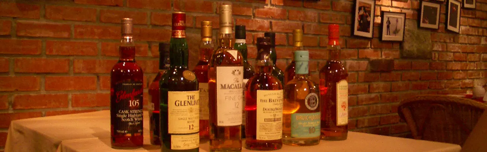

local_bar 品飲方式
我平常品飲酒品時會先仔細觀察酒色、嗅聞香氣，再慢慢品嚐口感。我會用舌尖細細品味每一滴酒液，感受其在舌尖上的層次和餘韻。在品嚐過程中，我會注重酒的醇厚度、果味、煙燻度等特徵，並與其他品牌或類型的酒進行比較，以更好地理解和欣賞每款酒的獨特之處。
偶爾會搭配一些小食或點心，嘗試酒食搭配。總的來說，我品飲酒品時會細緻入微，充分感受每一種酒的風味特色，並且享受其中的美好體驗。
local_drink 只能純飲?
- 純飲：我最常品飲的方式，單純享受SMW的美好。
- 混酒：把手邊的數種SMW依比例調和，體驗酒廠首席調酒師的樂趣。
- 加水：加水後可以破壞分子鏈結降低酒精度，香氣跟口感都會有不同的變化。
- 加冰：通常會用不易融化的老冰，可以降低品飲時的溫度，不過可能會減少香氣。
- 氣泡水：炎炎夏日加入冰涼的氣泡酒，氣泡跟酒液分子的融合會有意想不到的驚奇。
- 調酒：近年隨著各大酒廠對夜間通路的重視，紛紛推出多元化的調酒，有機會的話不要忘記點一杯SMW為基底的調酒喔。
local_car_wash 安全回家
通常我多在家中品飲，不過總是會參加品酒會或是聚會，交通就是一個問題了，喝酒不開車，以下方法可以讓您安全回家。
- 大眾運輸：便宜又便利的交通方式。
- 計程車：不小心錯過末班車了。
- 指定駕駛：找個不喝酒的麻吉，我都沒有這種朋友。
- 專業代駕：不小心開車出門就需要了。